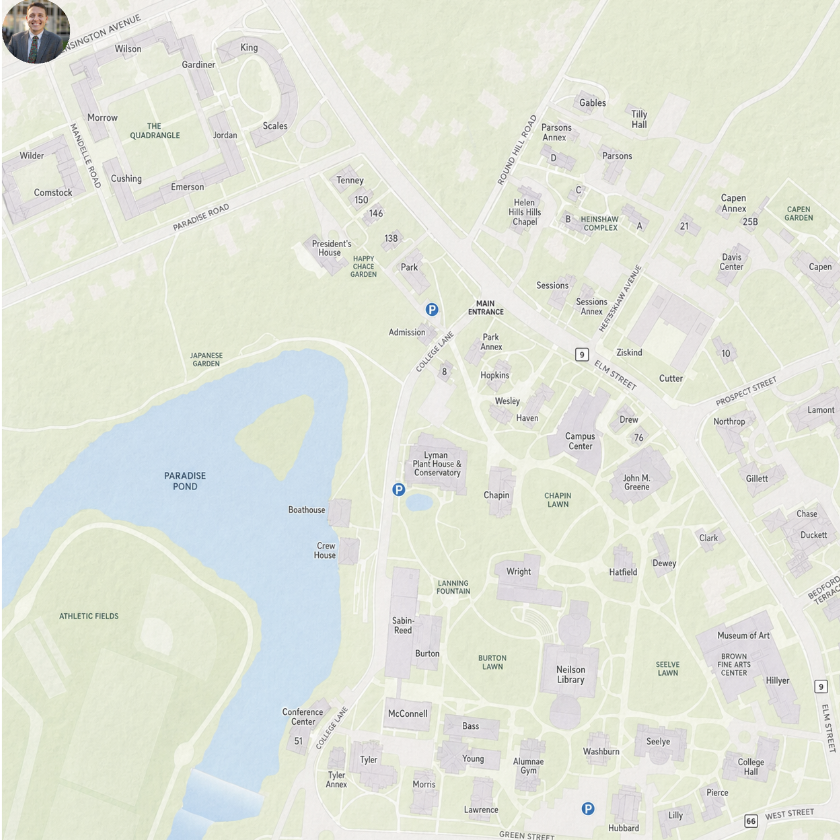
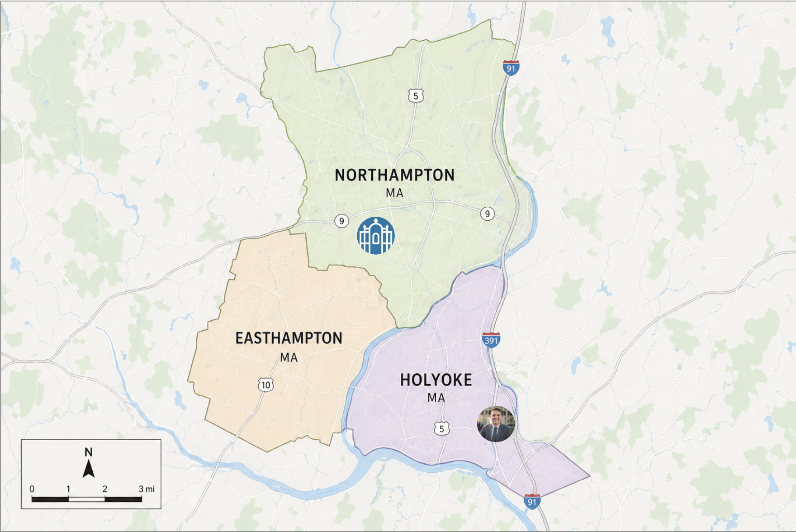
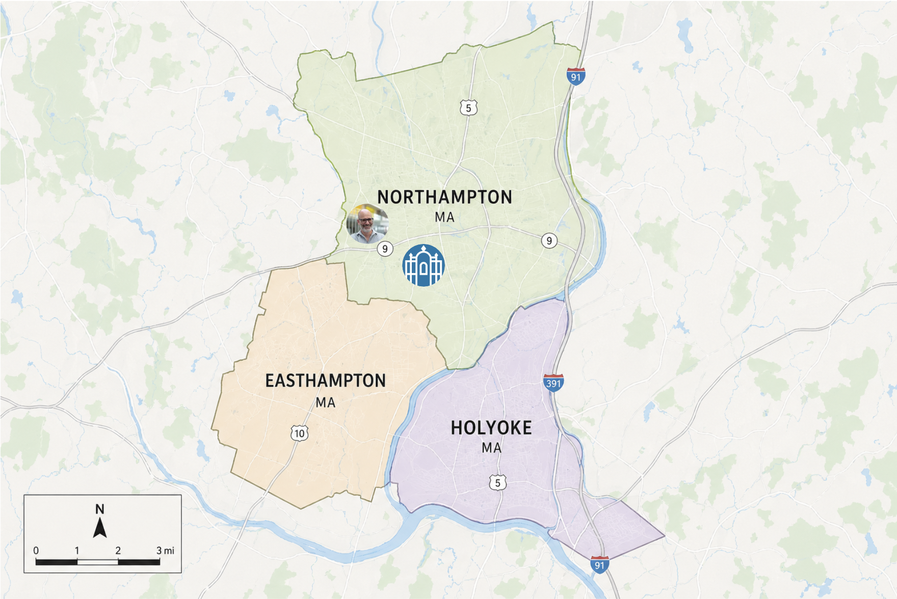
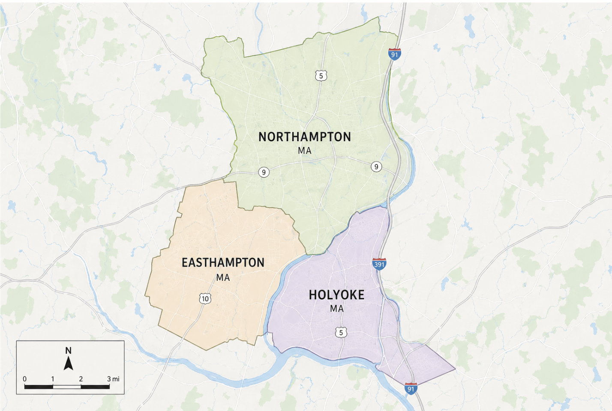
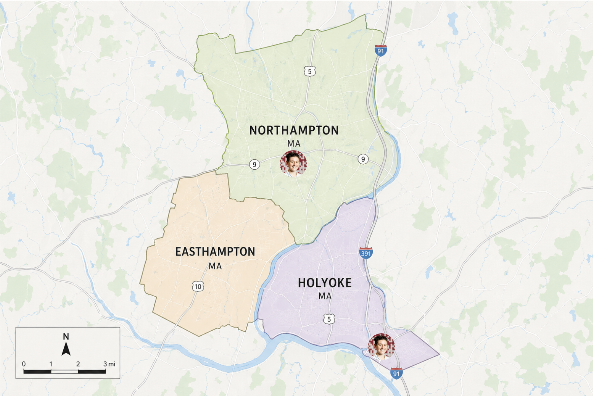
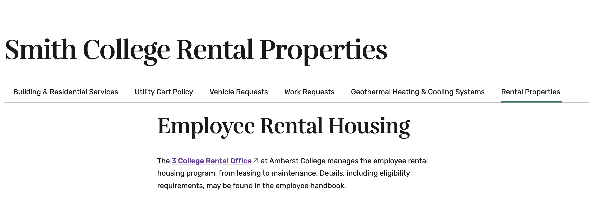
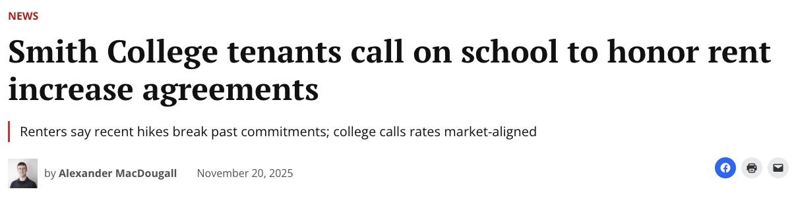

Northampton’s Soaring Housing Costs are Pushing Smith Faculty Out of Town
As the housing affordability crisis in Western Massachusetts continues to worsen, even those considered to be some of the most privileged and educated members of our community are struggling to afford homes in the area.
Many of Smith’s faculty members, especially junior faculty, can’t afford to buy property in Northampton, they report. The median cost of a single-family home in Northampton has nearly tripled since January 2012. Because of this, many new faculty members have resorted to renting or purchasing houses elsewhere, some in neighboring towns and others with commutes over 30 minutes.
With Northampton’s growing demand for housing is in tension with limited rental units, Smith is scrambling to keep faculty connected to the community they teach in.
Former Smith professor of Government and Statistical and Data Sciences, Scott LaCombe explained newer professors tend to own homes in farther-away towns, while tenured professors tend to own homes much closer to campus.
LaCombe started at Smith in the fall of 2020 and lived in faculty housing until February of 2024
When he purchased a home in Holyoke with his family.
His house in Holyoke sold for 350 thousand dollars.
At the time, the median price of a single-family home in Northampton was 420 thousand dollars.
Last Spring, LaCombe and his family moved to Missouri, partially to be closer to family, as well as high housing costs and underperforming schools in Holyoke.
While many junior faculty members rent or own property in surrounding towns, senior faculty and staff who have been in the area for many years were often able to buy their homes before the prices climbed to their current levels. Many of these people bought their homes over 10 years ago, when housing prices were much lower. Now, a lot of faculty consider themselves lucky for being able to own a home close to campus.
An analysis of data shows that since 2012, median single-family home values in Northampton have increased exponentially.
With the highest median single-family home value being nearly 800 thousand dollars in October of last
The lowest median single family home value was in March 2014 with prices dipping just below 200 thousand dollars.
As of February, the median cost of a single-family home is 609 thousand dollars, which is nearly triple the median in January of 2012.
On the other hand, average faculty salaries have only increased 26 percent on the same timeline, with the cumulative inflation having been about 45 percent.
Adam Dunetz, one of Smith’s dining managers, said that he bought his home for 190 thousand dollars in 2011.
His street dead ends to a sewage treatment facility, which, although off-putting to other buyers, worked in his favor.
According to Dunetz, however, like rest of the city home values in his neighborhood have increased “exponentially” since then.
He explained that such good deals are becoming rarer and rarer and that his family is effectively trapped in their current home due to the Northampton housing market.
Jeremy Bonios, the retail dining manager for the Campus Center and Compass Cafe, has owned property in Northampton for ten years. He moved here from Los Angeles eleven years ago and was able to buy a home after renting for just one year in the area.
Bonios owns multiple rental units in a multi-family home, which he manages with his wife. They have witnessed both sides of the increase in housing costs, and he expressed that they have been both positively and negatively impacted.
Along with the increase in property taxes, Bonios reports that his homeowner’s insurance increased by almost 30% in just one year, dramatically increasing his monthly expenses for his property.
These rising costs have forced landlords to increase rent in order to keep up with their own expenses.
Many newer faculty members with a desire to own property, like LaCombe, have turned to neighboring towns with much lower prices.
Ab Mosca is a second-year professor at Smith who owns a home in Holyoke.
Prior to their move to Holyoke, Mosca rented a 2-bedroom apartment in Northampton for $2100 a month.
They expressed that they would have loved to live in Northampton long-term but opted to purchase somewhere more affordable.
Even in Holyoke, Mosca paid 350 thousand dollars for their home and lives with a roommate to help cover the cost of the mortgage.
Smith College has various longstanding programs in an effort to help faculty afford to live in the area.
The college owns a total of 35 buildings and 86 rental units through 3 College Rentals, which serves faculty from Smith, Mount Holyoke, and Amherst College.
About half of the units are occupied by staff and the other half are occupied by faculty members.
But it’s not enough.
In November, the Daily Hampshire Gazette reported on Smith College spiking rents for tenants by nearly 28%.
The college responded to the article by saying:
Anne-Marie Smzyt, VP for Human Resources, acknowledged the balance between affordability and profit for the college.
Smith College also offers a second mortgage program to try and make buying a house more attainable. The program is a legally binding lien document on the house and is repaid to Smith over the course of the 30-year mortgage. This program is available to full-time faculty who are purchasing their first home and are relocating to Northampton for their employment.
When investigation for this article began, the college offered up to 70 thousand dollars to eligible faculty members.
Since then, the amount has been increased to 75 thousand dollars. The money can be put towards the down payment of the home, buying mortgage points, or reducing their monthly mortgage payments.
Payments to the college for the second mortgage along with interest, which is fixed at 80 percent of the applicable federal rate (AFR) at the time the loan is established, are deducted from each paycheck to simplify the process.
“It’s kind of funny; amongst Smith faculty
you can basically tell what year they were hired
based on how far they lived from campus.”
you can basically tell what year they were hired
based on how far they lived from campus.”


“If we had been able to afford it,
we would have stayed in Northampton,
but there was just no universe that we
were going to be able to be homeowners
long term. Even in towns like Holyoke,
which are more affordable, you can see
real estate prices just everywhere in
Massachusetts are just skyrocketing.”
LaCombe said.
we would have stayed in Northampton,
but there was just no universe that we
were going to be able to be homeowners
long term. Even in towns like Holyoke,
which are more affordable, you can see
real estate prices just everywhere in
Massachusetts are just skyrocketing.”
LaCombe said.


“It was even a good deal then!” Dunetz said.
“We’ll probably live in this house for the rest of our lives,”
Dunetz said, expressing minimal hope that his family will ever be
able to buy property again in the current Northampton market
unless something changes drastically.
Dunetz said, expressing minimal hope that his family will ever be
able to buy property again in the current Northampton market
unless something changes drastically.

“Property values are increasing, and while it
is good in the long run, in my immediate life
I am paying more property taxes,” Bonios said.
is good in the long run, in my immediate life
I am paying more property taxes,” Bonios said.
“A lot of these landlords are people like me,”
Bonios said. “They have had their property taxes
and also homeowner’s insurance go up, and so that,
in turn, reflects in the cost of rent.”
Bonios said. “They have had their property taxes
and also homeowner’s insurance go up, and so that,
in turn, reflects in the cost of rent.”


“I could not afford to buy anything in Northampton,
Holyoke was the only place that was affordable
and still a reasonable drive for me,” they explained.
“Northampton is much more expensive than Holyoke;
you get much less space for your money.”
Holyoke was the only place that was affordable
and still a reasonable drive for me,” they explained.
“Northampton is much more expensive than Holyoke;
you get much less space for your money.”

“Quite honestly, I think that the need outpaces the stock.
The need out there is much more than we have for availability,”
said Larry Syder, AVP of Campus Services, Operations & Maintenance.
The need out there is much more than we have for availability,”
said Larry Syder, AVP of Campus Services, Operations & Maintenance.

“The rental rates are set in an attempt to stay in line
with the current market, and the revenue is used to cover
costs such as property taxes, updates, and maintenance.
While Smith does not speak to the details of individual
leases, the college does comply with the terms of all
documented agreements related to its rental properties.”
with the current market, and the revenue is used to cover
costs such as property taxes, updates, and maintenance.
While Smith does not speak to the details of individual
leases, the college does comply with the terms of all
documented agreements related to its rental properties.”
“People are focused on what the percentage is, not
necessarily what the dollar amount is,” said Smzyt.
“We’d love to make our housing as close to nothing
as we possibly can, but that’s not reality.”
necessarily what the dollar amount is,” said Smzyt.
“We’d love to make our housing as close to nothing
as we possibly can, but that’s not reality.”
“For Faculty: Are a full-time faculty member
in a ladder or renewable position. For
Faculty with Five College joint appointments,
Smith College must be the home institution.”
in a ladder or renewable position. For
Faculty with Five College joint appointments,
Smith College must be the home institution.”
“We’ve had many conversations, and we do often, if
70,000 is the right amount of money,” said Szmyt.
“We’re at a point right now with all the financial
headwinds coming in at the college that we want to
be really careful that we’re not overextending.”
70,000 is the right amount of money,” said Szmyt.
“We’re at a point right now with all the financial
headwinds coming in at the college that we want to
be really careful that we’re not overextending.”